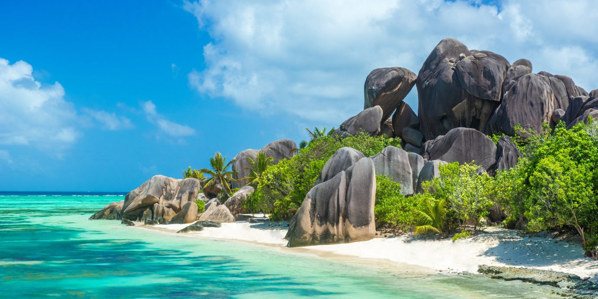

Mirissa Beach

Mirissa Beach, located on the southern coast of Sri Lanka, is a pristine paradise renowned for its natural beauty and laid-back ambiance. Surrounded
by swaying palm trees, golden sands, and crystal-clear waters, Mirissa Beach is a favorite destination for travelers seeking relaxation and tranquility.
The beach's situation along the coast provides a picturesque setting for sunbathing, swimming, and water sports. The calm and gentle waves make it an ideal spot for swimming and snorkeling, while the stunning sunsets create a magical atmosphere. Mirissa Beach is also famous for its whale watching opportunities, as it lies on the migratory route of several whale species.
The history of Mirissa Beach is intertwined with Sri Lanka's maritime past. It was once a thriving fishing village, where locals relied on the sea for their livelihoods. Although the village has transformed into a popular tourist destination, the fishing community continues to thrive, and visitors can witness traditional fishing practices and enjoy fresh seafood at the beachside restaurants.
The value of Mirissa Beach lies not only in its natural beauty but also in the sense of serenity and escape it offers. Travelers can unwind on the soft sands, take long walks along the shore, and indulge in the local cuisine. The beach's relatively untouched ambiance, compared to some of the more developed coastal areas in Sri Lanka, adds to its charm and makes it a favorite among those seeking a more laid-back and authentic beach experience.
Mirissa Beach serves as a gateway to explore other attractions in the area, such as nearby surf spots, nature reserves, and Buddhist temples. The beach's convenient location and range of accommodations, from luxury resorts to budget-friendly guesthouses, make it an attractive choice for all types of travelers.
In conclusion, Mirissa Beach offers a perfect blend of natural beauty, recreational opportunities, and cultural experiences. Its pristine sands, azure waters, and breathtaking sunsets provide an idyllic setting for relaxation and exploration. Whether it's lounging on the beach, engaging in water sports, or immersing oneself in the local fishing village's culture, Mirissa Beach promises a memorable and rejuvenating escape on Sri Lanka's southern coast.
The beach's situation along the coast provides a picturesque setting for sunbathing, swimming, and water sports. The calm and gentle waves make it an ideal spot for swimming and snorkeling, while the stunning sunsets create a magical atmosphere. Mirissa Beach is also famous for its whale watching opportunities, as it lies on the migratory route of several whale species.
The history of Mirissa Beach is intertwined with Sri Lanka's maritime past. It was once a thriving fishing village, where locals relied on the sea for their livelihoods. Although the village has transformed into a popular tourist destination, the fishing community continues to thrive, and visitors can witness traditional fishing practices and enjoy fresh seafood at the beachside restaurants.
The value of Mirissa Beach lies not only in its natural beauty but also in the sense of serenity and escape it offers. Travelers can unwind on the soft sands, take long walks along the shore, and indulge in the local cuisine. The beach's relatively untouched ambiance, compared to some of the more developed coastal areas in Sri Lanka, adds to its charm and makes it a favorite among those seeking a more laid-back and authentic beach experience.
Mirissa Beach serves as a gateway to explore other attractions in the area, such as nearby surf spots, nature reserves, and Buddhist temples. The beach's convenient location and range of accommodations, from luxury resorts to budget-friendly guesthouses, make it an attractive choice for all types of travelers.
In conclusion, Mirissa Beach offers a perfect blend of natural beauty, recreational opportunities, and cultural experiences. Its pristine sands, azure waters, and breathtaking sunsets provide an idyllic setting for relaxation and exploration. Whether it's lounging on the beach, engaging in water sports, or immersing oneself in the local fishing village's culture, Mirissa Beach promises a memorable and rejuvenating escape on Sri Lanka's southern coast.